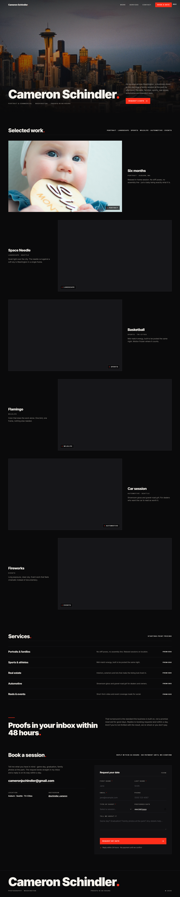

PROJECTION
Inter 900 · capsOpen · iteration-01.html

DESKTOP 1440live file
The reference faithful: the whole page is an end-credit sequence projected in a dark room. Photography full-bleed, type set like film credits, one pulsing REC dot, a film-grain veil. If the priority is "does exactly what denniswebber.com does, but for this photographer's facts" · this is it.
Signature movePulsing REC dot + film-grain overlay on the hero
Palette#0a0a0b#f5f2ec#ff2e1a
MotionOne hero settle + slow credit pulse; reduced-motion safe
Honest riskThe least novel card · it's the incumbent world, sharpened to its full cinematic destination.